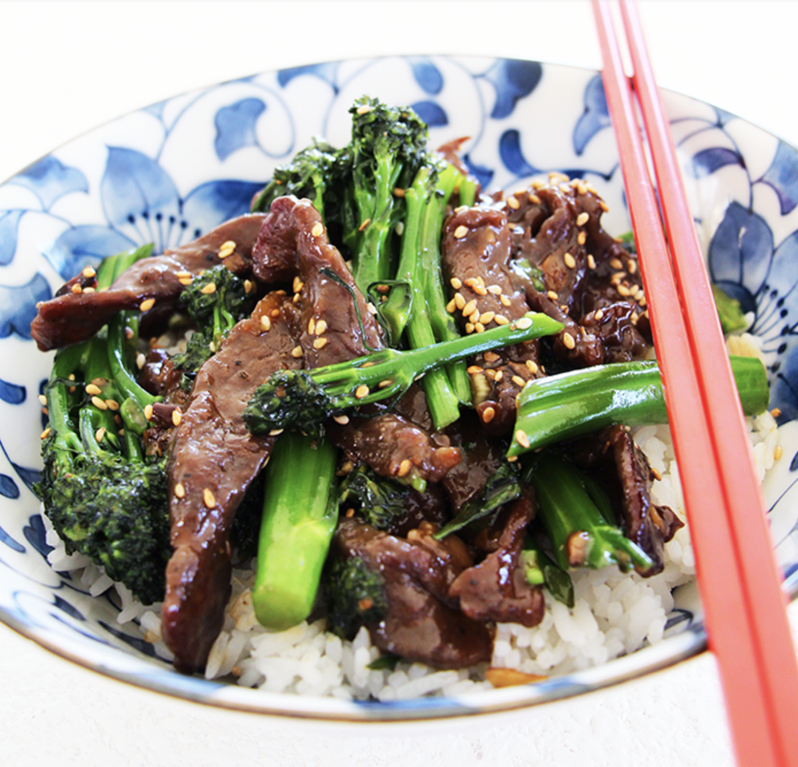

Beef and Broccoli
Original recipe found at http://seonkyounglongest.com/easy-beef-and-broccoli/

Ingredients
Beef and Marinade
- 8 oz (1/2 lb) New York steak, sirloin or chuck
- 1 tsp. Soy sauce
- 1 tsp. Shaoxing wine, rice wine or dry sherry
- 1/2 tsp. Corn starch
- 1/4 tsp. Baking soda
- 1/8 tsp. Black or white pepper
Brown Sauce
- 1 Tbs. Soy sauce
- 1 Tbs. Oyster sauce
- 1 1/2 tsp. sugar (Add 1/2 tsp. more if you like it on the sweeter side.)
- 1 Tbs. Shaoxing wine, rice wine or dry sherry
- 1 tsp. Corn starch
- 1/8 tsp. Black or white pepper
Stir Fry
- 8 oz. (1/2 lb) Broccolini, broccoli or Chinese broccoli
- 2 Cloves garlic
- 1 oz. Fresh ginger (approximately 2 to 3 very thin slices)
- 2 Tbs. High smoke point cooking oil (Such as peanut, canola, vegetable, sunflower or avocado oil)
- 1 green onion
- 1 tsp. Sesame oil
- Sesame seeds
Instructions
- Take big chunk of fat from beef and slice into ¼ inch thin. In a mixing bowl, add sliced beef and rest of ingredients for beef. Mix well with your hand, set aside
- While beef is marinate, let’s make sauce and prepare vegetables. In another mixing bowl, combine all ingredients for brown sauce. Whisk well, set aside
- Cut dry bottom from broccolini and cut into halves, or bite sizes, set aside.
- Chop garlic and green onion. Mince fresh ginger and set aside
- Heat a wok over high heat with approximately 1 cup water and bring it to boil. Add broccolini and blench for 1 minutes. Remove from heat and drain broccoli and set aside.
- Heat now-empty wok over high heat until completely dried; add oil and swirl to coat. Add garlic and ginger, stir fry until you can smell the fragrance, about 30 seconds.
- Add marinated beef into wok, combine with garlic and ginger. Spread beef evenly bottom of work, and cook until edge is darken and crispy, about a couple minutes.
- Turn it over, and cook other side for a couple minutes or until edge is darken, crispy and beef is cooked ¾ way and you can barely see red spots
- Pour sauce we made earlier; stir fry until sauce has thicken, glossy and beef is coated evenly with sauce, about a minute. Stir frequently so sauce will not burn.
- Add blanched broccolini into beef and combine well, about 30 seconds. We don’t need to cook broccolini, just need to mixed with sauce and reheated.
- Remove from heat, stir in chopped green onion and sesame oil.
- Transfer to a serving plate, and garnish with some toasted sesame seeds if you desired. Serve with warm cooked Jasmine rice is the best!!